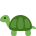
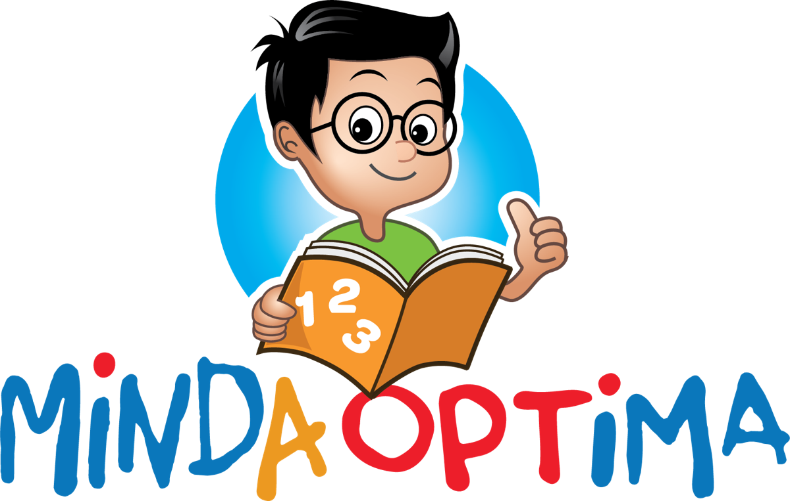

Lambat membaca?
Susah mengeja
Keliru huruf
Tak minat baca
Ramai
ibu bapa
kata...
Ibu bapa
Anak saya lambat membaca...

Ibu bapa
Kenapa dia masih mengeja?
Ibu bapa
Kawan dia dah lancar baca...
“Anak
saya
memang
lambat
membaca.”
Tapi
sebenarnya,
membaca
bukan
bakat
semula
jadi.

A
B
C


Ia
satu
kemahiran.
Dan
setiap
kemahiran...
boleh
dilatih.
 Kemahiran Membaca
15%
Kemahiran Membaca
15%
Huruf
Suku kata
Perkataan
Ayat


Setiap
anak
ada
rentak
sendiri.
Ada
yang
cepat,
ada
yang
perlukan
sedikit
masa.
Cepat

Perlahan-lahan
Yang
penting,
latihan
yang
konsisten.
 Latihan setiap hari
Latihan setiap hariIsn
Sel
Rab
Kha
Jum
Dan
bimbingan
yang
betul.
Dibimbing guru
Langkah demi langkah

Jangan
bandingkan
anak
dengan
orang
lain.
Anak anda
Orang lain
VS
Bandingkan
dia...
dengan
dirinya
semalam.



Setiap
anak
mampu
belajar
membaca.
Daftar Sekarang
Program membaca kanak-kanak